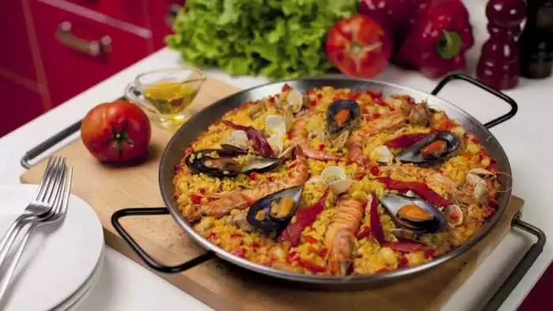
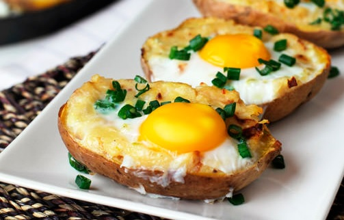

Paella de Mariscos
Publicado el 10/09/2017
Esta receta es uno de los clásicos de la cocina internacional.Tiene un encanto especial para cualquier ocasión..
Ingredientes:
- 400g de arroz
- 12 langostinos
- 16 mejillones
- 12 almejas
- 800ml de caldo de pescado
- 1 cebolla
- 1 pimentón verde
- ½ pimentón rojo
- 1 calamar grande
- 1 lata pequeña de concentrado de tomate
- ½ vaso de vino blanco
- 2 ajos
- 1 rama perejil
- 1 hebra de azafrán
- Aceite de oliva
- Sal
Preparación:
Primero en una paellera se vierte un poco de aceite, se saltean las gambas y las almejas, para que el aceite coja sabor, se retira el marisco del fuego para reservarlo. En ese mismo aceite bien caliente, se fríe el calamar cortado en dados, hasta que dore, se retira. Se añade la cebolla, los pimentones, la picada de ajo y perejil, que se mezcle todo bien, entonces vierte el vino y se deja reducir. Cuando haya evaporado, se añade el calamar, el tomate y la hebra de azafrán. Se deja 2 minutos removiendo bien y entonces se añade el arroz. Esperar 2 minutos más sin parar de remover, añadir el caldo y dejar hervir. Entonces se colocan las gambas, almejas y mejillones bien bonito todo, y se mete la paella al horno a 180º unos 15-20 minutos. Se deja reposar fuera 5 minutos más y listo.
Recetas de Colombia
Comentar
Comentarios

Papas rellenas con huevo y tocino
Publicado el 05/09/2017
No importa la ocasión, una ensalada siempre cae bien. Esta receta es deliciosa, fácil de preparar y seguro que a todos les va a encantar.
Ingredientes:
- 2 papas grandes
- 3 rebanadas de tocino cocido
- 4 huevos
- 100g de queso emmental rallado
- hojas de cilantro para decorar
Preparación:
Envuelve las papas en papel aluminio y cocinarlas en el horno durante 1 hora a 200ºC. Sacarlas del horno y espera a que se enfríen, córtalas por la mitad. Con una cuchara retirar parte del centro. Rellenamos primero con mantequilla, luego con una cucharada de queso, seguido por el huevo, el tocino y por último cúbrelas con más queso. Volvemos y las colocamos en el horno durante 8 minutos a 160ºC. Decora con cilantro y sirve.
Comentar
Comentarios